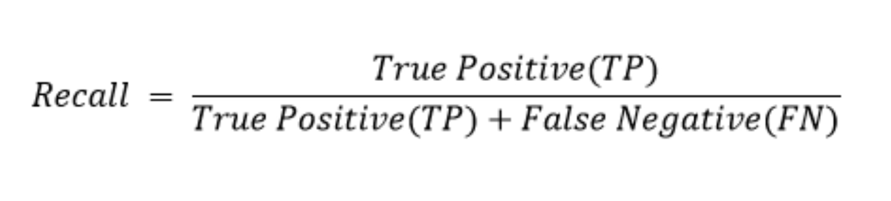

Metrics and the use of Metrics
Metrics play a pivotal role in gauging the effectiveness and suitability of models for specific tasks. These quantitative measures provide insights into how well a model is performing, enabling data scientists to make informed decisions about its deployment or optimization. The comparison of different models becomes more straightforward with the help of metrics, guiding practitioners to select the most appropriate algorithm for a given classification problem.
One of the critical aspects addressed by these metrics is the ability to identify areas for improvement and optimization. By analyzing metrics, data scientists can gain a deeper understanding of a model's strengths and weaknesses, allowing them to fine-tune parameters and enhance overall predictive capabilities. These measures also contribute to the continuous improvement of models, ensuring their adaptability to evolving datasets and changing conditions. Regular monitoring of metrics facilitates the detection of issues such as overfitting or underfitting, guiding practitioners in maintaining models that are both accurate and robust.
Moreover, metrics serve as a common language for communication between technical experts and non-technical stakeholders. They provide a means for conveying the performance of a classification model in a comprehensible manner, fostering collaboration and understanding across diverse teams. Additionally, metrics are instrumental in addressing problem-specific evaluation criteria, allowing for tailored assessments based on the unique priorities of a given classification task. Overall, metrics are indispensable tools that contribute to the interpretability, optimization, and continuous enhancement of machine learning classification algorithms.
List of Metrics
Evaluating the performance of classification algorithms involves using various metrics to assess their accuracy and effectiveness. Here are some key metrics commonly employed for this purpose:
- Confusion Matrix
- Accuracy
- Precision
- Recall (Sensitivity or True Positive Rate)
- F1 Score
- Receiver Operating Characteristic (ROC)
- Area Under the Curve(AUC)
- Matthews Correlation Coefficient (MCC)
- Cohen's Kappa
Confusion Matrix
A confusion matrix is a table that is used to evaluate the performance of a classification algorithm on a set of data for which the true values are known. It provides a summary of the predicted and actual classifications, showing the number of true positives, true negatives, false positives, and false negatives. The key elements of a confusion matrix are:
True Positives (TP): The number of instances that were correctly predicted as positive by the model.
True Negatives (TN): The number of instances that were correctly predicted as negative by the model.
False Positives (FP): The number of instances that were incorrectly predicted as positive by the model.
False Negatives (FN): The number of instances that were incorrectly predicted as negative by the model.
Accuracy
In simple linear regression, there is one independent variable, while in multiple linear regression, there are multiple independent variables. The linear relationship is represented by the equation of a straight line:

Precision
Precision, also known as Positive Predictive Value (PPV), is a performance metric used in binary and multiclass classification. It measures the accuracy of the positive predictions made by a model. Precision is calculated using the following formula
Recall
Recall, also known as Sensitivity or True Positive Rate, is a performance metric used in binary and multiclass classification. It measures the ability of a model to capture all the relevant instances of a positive class. Recall is calculated using the following formula:
F1 Score
The F1 Score is a metric that combines both precision and recall into a single value, providing a balanced measure of a model's performance, especially in binary classification settings. It is particularly useful when there is an imbalance between the classes or when false positives and false negatives have different consequences.
The F1 Score is calculated using the following formula:

Receiver Operating Characteristic (ROC)
ROC, which stands for Receiver Operating Characteristic, is a graphical representation of a binary classification model's performance across different discrimination thresholds. It is a valuable tool for assessing the trade-off between sensitivity (recall) and specificity at various decision thresholds.
The ROC curve is created by plotting the True Positive Rate (Sensitivity) against the False Positive Rate (1 - Specificity) at different threshold settings. The curve illustrates how well the model can distinguish between the positive and negative classes across a range of sensitivity and specificity values.
Area Under the Curve(AUC)
The Area Under the Curve (AUC) is a numerical measure used to evaluate the performance of a binary classification model based on its Receiver Operating Characteristic (ROC) curve. The ROC curve plots the True Positive Rate (Sensitivity) against the False Positive Rate (1 - Specificity) at various decision thresholds.
The AUC-ROC quantifies the overall ability of a model to discriminate between the positive and negative classes across different thresholds. The AUC value ranges from 0 to 1, where:
- AUC = 0.5: The model performs no better than random guessing.
- AUC > 0.5: Indicates better-than-random performance.
- AUC = 1: Represents perfect classification.
Matthews Correlation Coefficient (MCC)
The Matthews Correlation Coefficient (MCC) is a metric used to evaluate the performance of binary classification models. It takes into account true positives, true negatives, false positives, and false negatives, providing a balanced measure that considers the entire confusion matrix.
The formula for Matthews Correlation Coefficient is given by:
Cohen's Kappa
Cohen's Kappa (κ) is a statistical measure of inter-rater agreement or reliability for categorical items, such as classification tasks in machine learning. It assesses the agreement between two raters (or between a model and human annotators) by comparing the observed agreement to the agreement expected by chance.
The formula for Cohen's Kappa is given by:
Cohen's Kappa = (Observed Accuracy - Expected Accuracy) / (1 - Expected Accuracy)